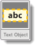
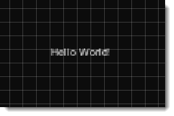
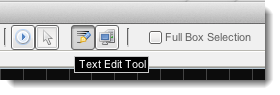
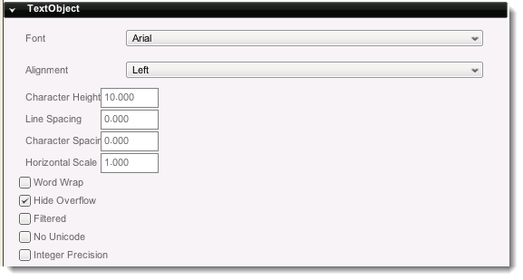

Introduction
Text objects (t2dTextObject) allow string of dynamic text to exist
within the Scene, without requiring the GUI to be involved. They are a
lower level replacement to bitmap sprites representing text,
making them mostly useful for large blocks of text or mock ups. Static
sprites will always be more attractive and flexible, but text objects
are available for quick uses.
Creation
To create a text object, start by navigating to the Create Tab. In the Other Panel, located at the very
bottom, click on the Text Object button and drag it into the scene. Drop it where you would like your Text Object to be created.

When the object is first dropped, it will be in Text Edit mode. Write out the string of text that you would like it to contain.

Alternately, you can click the Text Edit Tool on the Toolbar and then click in your scene to place the new Text Object.

When you have finished editing the text, click anywhere in the Scene View outside of the Text Object to exit Text Edit mode.
Properties

- Font - Font to use for this Text Object.
- Alignment
- Left - Each line begins at the left bounds of the object.
- Right - Each line ends at the right bounds of the object.
- Center - Each line of text is centered within the object bounds.
- Justify - Text on complete lines is spaced out to fill the object bounds.
- Character Height - Height of the characters.
- Line Spacing - Space between each line of text.
- Character Spacing - Space between each character.
- Horizontal Scale - Amount of horizontal space the TextObject takes up.
- Word Wrap - If true, words will automatically wrap to the next line when reaching the end of the TextObject area.
- Hide Overflow - If true, text outside of the TextArea will not render.
- Filtered - Enables or Disables the filtering on the TextObject.
- No Unicode - Disables intensive unicode conversions (if unicode is not required).
- Integer Precision - Allows the text object to work on integer levels, avoiding half-pixel imprecisions.
Script Representation
new t2dTextObject() {
size = "1.0 2.0";
font = "Arial";
wordWrap = "0";
hideOverflow = "0";
textAlign = "Center";
lineHeight = "2.0";
aspectRatio = "1";
lineSpacing = "0";
characterSpacing = "0";
autoSize = "1";
fontSizes = "80";
};
Conclusion
Text Objects allow dynamic text to exist in your scene, good for
dynamic numbers such as in-scene scoreboards and more. With clever
scripting work, you can replace the text object functionality using
static sprites. |